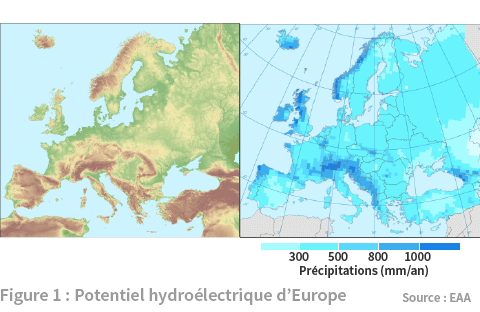
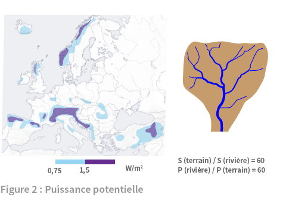
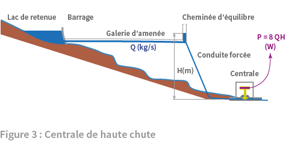
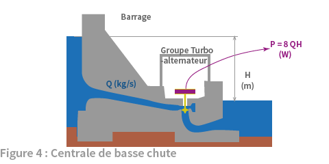
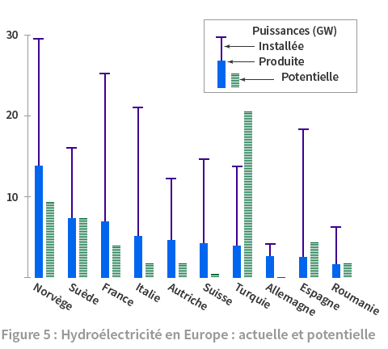

2. Transformations
L’hydroélectricité est une énergie renouvelable qu’alimente le flux d’énergie apporté par le cycle de l’eau. Ce cycle est mis en mouvement par l’évaporation des océans et des eaux continentales sous l’effet de la chaleur du flux infrarouge du soleil et de l’atmosphère. C’est une lame d’eau haute d’un mètre qui est évaporée annuellement en moyenne sur la planète. Le cycle de l’eau étant fermé, c’est la même quantité d’eau qui retombe en précipitations à la surface de la planète.

Suivant les latitudes et le relief, les précipitations varient fortement autour de cette valeur moyenne. En Europe, la moyenne se situe autour de 800 mm par an, avec des variations d’amplitude assez fortes montrées sur le volet droit de la figure 1. La comparaison avec la carte physique, à gauche, montre que les bordures maritimes et les reliefs montagneux sont particulièrement exposés aux précipitations 1. Ainsi en France les précipitations varient de 600 mm/an dans le delta du Rhône à 2000 mm/an sur les monts du Cantal ou en Chartreuse 2.
Les reliefs sont propices à la production hydroélectrique. En effet l’eau de pluie (ou de fonte des neiges) dispose d’une énergie potentielle d’autant plus grande que le lieu où elle tombe se situe à une altitude élevée. L’énergie potentielle représente le travail qui sera ensuite accompli par l’eau de pluie dans sa progression depuis ce lieu, via les cours d’eau jusqu’à la mer où elle finira son parcours (si elle ne s’évapore pas). Aussi l’énergie potentielle des précipitations en un lieu donné est proportionnelle à leur poids et altitude. La figure 2 donne la répartition sur l’Europe des régions où la puissance correspondante excède 0,75 W/m2 3. Ces régions sont la chaine calédonienne du nord de l’Europe, principalement en Norvège et Suède, les Pyrénées, les Alpes et les reliefs en Turquie.

Les niveaux de puissance peuvent sembler faibles par rapport à ceux récupérables par le solaire photovoltaïque (5W/m2] ou l’éolien (2,5 W/m2) (voir fiche EnR). Ce serait oublier que la nature travaille efficacement à la collecte et à la concentration de l’énergie du cycle de l’eau grâce aux torrents, rivières et fleuves. Le schéma de droite de la figure 2 montre comment les cours d’eau collectent l’eau reçue par l’ensemble d’un bassin hydrographique. En France où 1,6% du territoire est recouvert par l’eau 4, les lacs et cours d’eau offrent un concentré de puissance par m2 qui est 61 fois supérieur à celui des précipitations. En supposant cette valeur généralisable à l’Europe, au moins 50 W/m2 sont disponibles dans les cours d’eau des régions colorées sur la carte d’Europe. 5
Cette puissance est dissipée dans les remous et l’érosion du lit des rivières lors de la descente de l’eau vers l’océan. L’homme a appris à en utiliser une partie pour assister son travail, d’abord avec les moulins ancestraux puis plus récemment avec l’hydroélectricité, développée conjointement par la démarche scientifique et l’invention technique. Le principe en est toujours le même : faire un aménagement artificiel de chute d’eau en bas de laquelle une machine tournante récupère la puissance mécanique de la chute et la transforme en puissance électrique.

Les montagnes aux bassins hydrographiques restreints mais pentus sont propices aux centrales de haute chute représentées sur la figure 3. Le profil du cours d’eau naturel est représenté par le profil brun surmonté du trait bleu. (La représentation dilate fortement l’échelle verticale par rapport à l’horizontale). Un ouvrage de haute chute est composé des différentes parties illustrées dans la figure 3. En amont, un barrage forme un lac de retenue des eaux du bassin versant. Une galerie creusée dans la montagne relie avec une faible pente la prise d’eau au bas du barrage à l’aplomb de la centrale hydroélectrique. Une conduite forcée amène ensuite l’eau à la centrale suivant une forte pente. Avant la conduite, une cheminée d’équilibre pouvant se remplir d’eau sert à amortir les transitoires et protéger la conduite des coups de bélier. Tout en bas, la puissance de la chute d’eau est convertie en rotation de groupes turbo-alternateurs qui génèrent la puissance électrique. La puissance maximale que peut délivrer le débit de masse d’eau Q (kg/s) chutant d’une hauteur H(m) est P= g.Q.H (g accélération de la pesanteur valant 9,81 m/s2) et, pour des pertes de l’ordre de 20% peut être approchée par P = 8 QH 6. Pour une hauteur de chute donnée, le débit d’eau maximal que peuvent accommoder les groupes turbo-alternateurs fixe la puissance maximale (dite installée) de la centrale. Quant à la puissance délivrée instantanément, elle dépend du réglage du débit. Le fonctionnement est saisonnier mais au terme d’une année, le niveau du réservoir doit revenir à celui du début. Aussi, le volume annuel des précipitations dans le bassin versant limite la puissance extraite en moyenne sur l’année.
L’aménagement de Tignes Malgovert. L’Isère est alimentée en amont du barrage de Tignes par un bassin versant de 327 km2 sur lequel tombe environ 1000 mm d’eau par an, d’où un débit moyen de la rivière de 110 m3/s (entre 90 et 100 après l’évaporation). La plus grande part de ce débit continue son parcours dans le cours naturel de la rivière en aval du barrage. L’autre part, prélevée en bas du barrage est dérivée vers la galerie d’amenée, creusée dans la montagne et longue de 15 km. Elle est suivie de la conduite forcée de 1,5 km qui descend vers la centrale suivant une pente de 45°. La hauteur totale de chute est de 950m. La centrale présente une puissance installée de 392 MW correspondant à un débit maximal turbiné de 50 m3/s. (Avec ce débit sur 950 m de la chute, la formule approchée P = 8 QH donne une puissance de 380 MW). La production de 805 GWh/an (égale à 92 MW) équivaut à un facteur de charge de 24%, d’où un débit turbiné en moyenne dans la centrale représentant 12% de celui de la rivière. 7

Plus bas, sur un fleuve coulant suivant une pente faible avec un fort débit, une centrale de basse chute est l’équipement approprié. Le barrage placé en travers du fleuve dérive le débit vers la centrale et doit être accompagné de dispositifs ménageant les activités existantes sur le cours d’eau, comme la circulation des poissons ou la navigation fluviale. La figure 4 montre une coupe du barrage et de la centrale qui lui est intégrée, et qui crée une petite retenue de faible volume à l’amont. Dans la petite retenue créée en amont du barrage, une prise d’eau prélève l’eau en partie basse du barrage. Une conduite forcée amène l’eau dans les turbines couplées aux alternateurs qui fournissent la puissance électrique valant à nouveau environ 8 QH. L’eau est rejetée en aval avec le minimum de remous pour limiter les pertes. Ce type de centrale, alimenté par l’écoulement régulier d’un fleuve, fonctionne généralement en continu.
La centrale hydroélectrique de Donzère Mondragon est construite sur un canal de dérivation du Rhône près de Bollène. Elle fonctionne sur une chute de 23 m présentant un débit maximal de 2.000 m3/s. La puissance installée est de 354 MW. (La formule approchée P= 8QH donne une puissance de 368 MW). La production annuelle est de 2100 GWh/an (égale à 240 MW) ce qui équivaut à un facteur de charge de 68%. 8
Ainsi, ces deux types de centrales ont des caractéristiques qui les rendent complémentaires : les centrales de basse chute, produisent l’électricité avec un facteur de charge élevé à condition de fonctionner en continu. Leur marge d’adaptation à la demande est limitée à de faibles amplitudes sur des durées courtes. Les centrales de haute chute ont un fonctionnement saisonnier et un facteur de charge plus faible mais peuvent varier rapidement la puissance délivrée grâce au volume important de leur retenue. La réalité des centrales est plus diversifiée que n’indiquent ces deux cas limites, et présente des situations intermédiaires et une gamme étendue de puissances installées.
L’hydroélectricité représente la première source de production électrique renouvelable européenne et repose sur des installations réparties géographiquement suivant le potentiel décrit indiqué dans la figure 2.

La figure 5 présente les dix premiers pays européens classés par ordre décroissant de la puissance hydroélectrique produite (barre bleue). Arrivent en tête les pays scandinaves montagneux suivis des quatre pays alpins. La puissance installée (trait violet) ne suit pas le même ordre, les pays nordiques, plus arrosés, nécessitant moins de puissance installée que les pays méridionaux. Ceci est manifeste quand on compare la Suède d’une part à la France et l’Italie d’autre part. Enfin, la barre hachurée verte indique le potentiel qui reste techniquement exploitable en plus de l’existant. La Turquie dispose d’un potentiel important en particulier dans les hauts plateaux et chaines montagneuses bordant la Mer Noire.
En conclusion, l’hydroélectricité représente une énergie renouvelable intéressante, confirmée par sa seconde place en Europe (après la biomasse) qui n’est pas simplement due à son antériorité sur les autres renouvelables mais aussi à des qualités intrinsèques qui sont apparues au fil de l’article : 1 une puissance assez concentrée par rapport aux autres renouvelables grâce au réseau hydrologique qui assure la collecte des précipitations, 2 une bonne flexibilité pour adapter la puissance délivrée à la demande d’électricité, 3 une possibilité de stockage d’énergie mécanique, en amont de la production électrique, dans les retenues des barrages.
Ce denier atout conduit même à l’installation d’équipements spécialisés pour cette seule fonction, les Stations de Transfert d’Energie par Pompage seront le sujet d’un article séparé. Les questions environnementales feront aussi l’objet d’un article séparé car les équipements hydroélectriques n’en sont pas exempts, à l’instar de tout mode de production d’énergie. ◊
Auteurs: Dominique Grand et Roland Vidil
European Environment Agency : http://www.eea.europa.eu/data-and-maps/figures/average-annual-precipitation ↑
Météo France : http://pluiesextremes.meteo.fr/hauteurs-moyennes-annuelles-de-precipitations_r213.html ↑
Les données sont tirées de B. Lehner et al., Europe’s hydropower potential today and in the future, Center for Environmental Systems Research, U. Kassel, 2001. Le fond de carte créé par GMT provient de Wikipedia. ↑
INSEE : occupation physique du territoire en 2010 http://www.insee.fr/fr/themes/tableau.asp?reg_id=0&ref_id=NATTEF01337 ↑
Dans Sustainable energy without the hot air, qui a inspiré le présent article, D. MacMay, donne une estimation voisine de 55 W/m2 pour l’Angleterre. ↑
J. Vernier, Les énergies renouvelables, Que Sais-je 2009 ↑
R. Moreau L’air et l’eau EDP Sciences 2013 ↑
ibid ↑